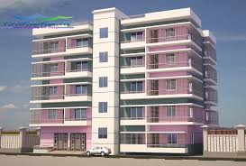

OUR GLOBAL CAMPUS
Our Global Campus connects students around the world to collaborate, discuss and learn together every day.

LONDON

You can choose any courses to do.
Intermediate courses are designed for those who have a passion or an interest in a particular area but might need more support when it comes to technical and study skills. You might also need to retake or continue studying English and Maths, which you will be able to do alongside your studies.
Degree level means enrollment in a course or program which could result in the award of a: (a) Certificate, diploma or other program award at an institution; (b) Baccalaureate degree or lower including enrollment in a course by a nondegree-seeking postbaccalaureate student; (c) Graduate degree or graduate certification ..
A postgraduate is a student who has successfully completed an undergraduate degree level course at a college or university and is undertaking further study at a more advanced level.
Our Global Campus connects students around the world to collaborate, discuss and learn together every day.
We invest heavily in our facilities and learning resources, ensuring that our staff and students have ccess to everything they need to help them succeed in their work and study.The growth of our learning resources has placed Aberdeen on the map as one of the UK’s leading universities for study and research.

The Central Library is the indispensable hub of discovery, learning and creativity at DEI by providing a distinguished collection of information resources unbounded by place and preserved for future generations.
There are lagest play grounds in our universities.So you can paly and enjoy your educational life.
There are very clean and excellent canteens in our universities.So you can enjoy your every meal with tasty and healthy foods.
We help our international students to gain the knowledge, practical experience and skills they need to succeed in their careers, wherever in the world they choose to work and live.
Studying abroad has been an incredible experience, and studying in a city like Brighton is even better. The university provides good facilities, great teachers and excellent support.
The best thing about the University of Brighton was the friendly environment and the facilities. My tutors were supportive and experienced, and it was easy to make appointments and ask any questions.